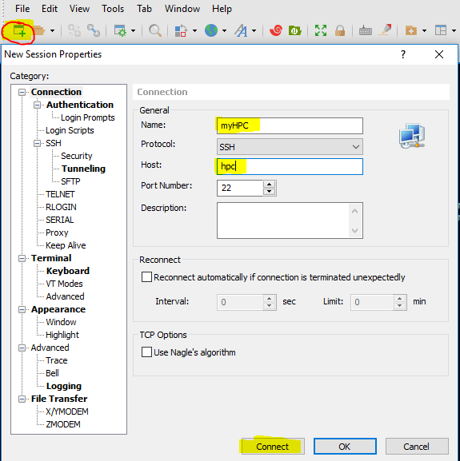
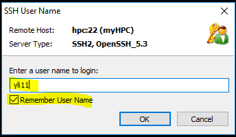
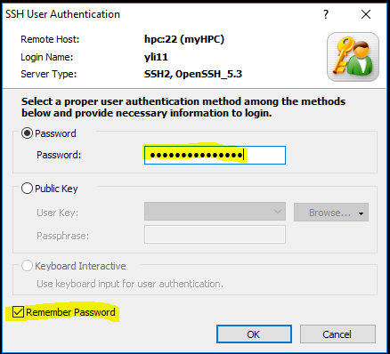

SSH to HPC without password¶
Make sure you are connected to $ecureNet
For non-Windows users¶
Open a terminal and do the following 4 steps.
Step 1. Create public/private RSA keys.
ssh-keygen -t rsa -N "" -f ~/.ssh/id_rsa
You should be able to see an output like below:
The key's randomart image is:
+---[RSA 2048]----+
| =+. o o .|
| . o o. @ o.=|
|. . += . * + =o|
|. ..+oo. . o . .|
|. + ++S o = |
| . . *.. B o |
| . . o . =E |
| . o... |
| . o. |
+----[SHA256]-----+
Step 2. Create a folder on HPC. (Enter your HPC password).
ssh hpc mkdir -p .ssh
Step 3. Let HPC knows that it is you. (Enter your password for the last time).
cat ~/.ssh/id_rsa.pub | ssh hpc 'cat >> .ssh/authorized_keys'
Step 4. Enjoy logging in without password
ssh hpc
For Windows users¶
A good news for windows users is that logging-in and transferring files from HPC to your local computer is very simple.
Step 1: Download and install Xshell and Xftp.
https://www.netsarang.com/en/xshell/
https://www.netsarang.com/en/xftp/
Step 2: Set up connection profile.
Open Xshell, click the red circle button below to open a new connection.
Input user name. Check the remember username option.
Input password. Check the remember password option.
Step 3: Transferring files.
Click the Xftp logo. It will open a new window and you can start uploading and downloading files from HPC.
| code @ github. |